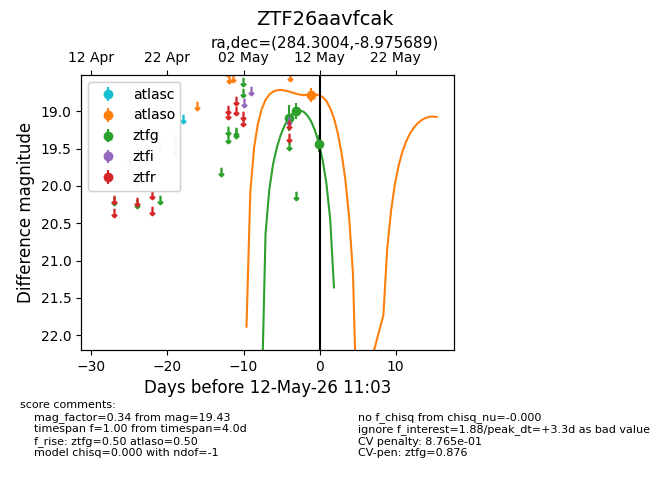
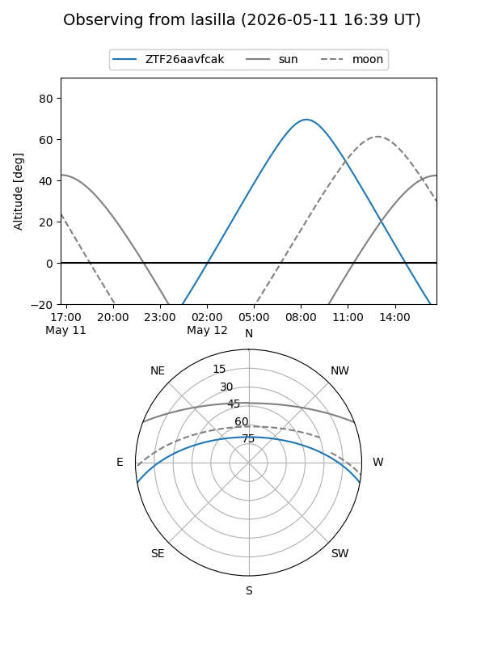
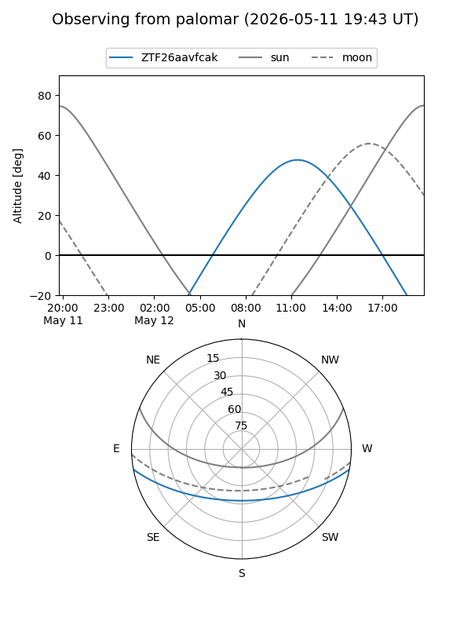
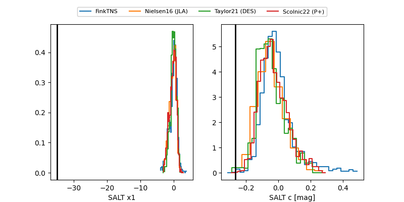

ZTF26aavfcak
Target ZTF26aavfcak at 2026-05-12 11:05
Aliases and brokers:
FINK: link
Lasair: link
ALeRCE: link
alt names
ZTF26aavfcak (ztf,fink_ztf)
Coordinates:
equatorial (ra, dec) = 284.3004,-8.97569
equatorial (HMS+DMS) = 18:57:12.08,-08:58:32.48
galactic (l, b) = (25.5730,-5.35035)
Flags:
likely cv
Photometry:
last atlaso=18.78, ztfg=19.43
1 atlaso, 3 ztfg detections
Lightcurve

Visibility


Additional plots
